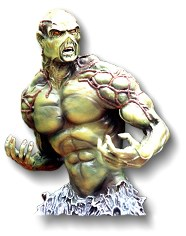
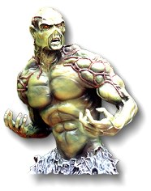

I started out with drawing and painting which is what
I was really interested in. The sculpting was kind of
by accident. I was just messing around with clay.
I wasn't really setting out to be a sculptor.
It just sort of happened. And I really liked it.
I have kind of gotten away from the drawing and painting.
Kits are taking up all of my time now. I do everything
from the sculpting, then the mold making, the casting,
and the packaging.
I started out with drawing and painting which is what
I was really interested in. The sculpting was kind of
by accident. I was just messing around with clay.
I wasn't really setting out to be a sculptor.
It just sort of happened. And I really liked it.
I have kind of gotten away from the drawing and painting.
Kits are taking up all of my time now. I do everything
from the sculpting, then the mold making, the casting,
and the packaging.
Are you a kit collector?
 That's what got me started. My first kit was the
Horizon Wolverine, their first vinyl one. Then my
first resin kit was GEOmetrics Fright Night Amy kit.
That's what got me started. My first kit was the
Horizon Wolverine, their first vinyl one. Then my
first resin kit was GEOmetrics Fright Night Amy kit.
 
What other sculptors do you like the most?
 I think my favorite would be Thomas Kuntz, because I
think that he captures likenesses the best.
Also Taishiro Kiya who did a lot for Horizon.
I like his work with anatomy. And Takayuki Takeya does
the greatest details and textures. There are many
good people out there for lots of different reasons.
I think my favorite would be Thomas Kuntz, because I
think that he captures likenesses the best.
Also Taishiro Kiya who did a lot for Horizon.
I like his work with anatomy. And Takayuki Takeya does
the greatest details and textures. There are many
good people out there for lots of different reasons.
How long has Cellar Cast been around?
 My first sculpture I did in '92. We have only been
an official business for a little over a year, but
we were using the name before that.
Up here in Seattle there aren't really many people
into figure kits so it's hard to get feedback on my stuff.
My first sculpture I did in '92. We have only been
an official business for a little over a year, but
we were using the name before that.
Up here in Seattle there aren't really many people
into figure kits so it's hard to get feedback on my stuff.
How many kits have you sculpted?
 I have done about 6 or 7 commissioned works.
And about 10 for myself.
I have done about 6 or 7 commissioned works.
And about 10 for myself.
What type of things do you like best? Fantasy, horror, sci-fi?
 Artistically my biggest influence was fantasy. Like Frazetta.
Bernie Wrightson is probably one of my all-time favorites.
And of course Boris.
Artistically my biggest influence was fantasy. Like Frazetta.
Bernie Wrightson is probably one of my all-time favorites.
And of course Boris.

What other companies have you sculpted for?
 Shawn McLaughlin from Death, Inc.
Shawn McLaughlin from Death, Inc.
The greatest thing that I have found working with Boris is that a lot of the input that I have goes a long way. A lot of the other projects every thing is planned with what you are supposed to do. Working with Boris has been really great. The sculptures that I have done, all you see from the painting is a front view so the back has been totally made up.
I usually take videos and send them to get feedback on the sculpture. With video you can rotate the kit so you can see it from all angles. The angle can change the way the kit looks so that works out really well. You don't have to wait for the film to be developed, etc.
How long does it take you to sculpt a kit?
 Usually about 2 months. It depends because I don't
spend all of my time sculpting. I'll sculpt a little,
do something else, then come back to the sculpture.
Most of my time I spend casting.
Usually about 2 months. It depends because I don't
spend all of my time sculpting. I'll sculpt a little,
do something else, then come back to the sculpture.
Most of my time I spend casting.
How do you build up the sculpture?
 I start with a wire armature then go over it with
epoxy putty to make it stronger. Then use Super
Sculpey for the rest.
Because a lot of times, Super Sculpey will crack
even when it's baked. The epoxy putty kind of
limits the cracking. That makes it kind of hard
to make a change when you have something half way
sculpted, but it makes it a lot more durable.
I start with a wire armature then go over it with
epoxy putty to make it stronger. Then use Super
Sculpey for the rest.
Because a lot of times, Super Sculpey will crack
even when it's baked. The epoxy putty kind of
limits the cracking. That makes it kind of hard
to make a change when you have something half way
sculpted, but it makes it a lot more durable.

Do you use any special tools for sculpting?
 I have a fine metal dental type spoon that I like a lot.
And two wood tools that I made myself. I have all types
of tools that I have picked up to see how they work.
I try everything. I tried magnifying things, but they
make my eyes feel weird.
I have a fine metal dental type spoon that I like a lot.
And two wood tools that I made myself. I have all types
of tools that I have picked up to see how they work.
I try everything. I tried magnifying things, but they
make my eyes feel weird.
Do you sculpt parts of the kit separately?
 Sometimes I'll sculpt the head separately. For the
licensed pieces I usually sculpt the head first then
get that approved. For the Zealot from Wildcats I
sculpted the head first. Then they needed some changes
so I changed it, then got it approved. Then I did the body.
Sometimes I'll sculpt the head separately. For the
licensed pieces I usually sculpt the head first then
get that approved. For the Zealot from Wildcats I
sculpted the head first. Then they needed some changes
so I changed it, then got it approved. Then I did the body.
What part do you like the best?
 I like the sculpting the best. I like the mold making
and casting, but only to get the first pieces out. After
the first ten kits it gets kind of boring, but that's when
it seems like you get the most orders. Painting that
first one is really great.
I like the sculpting the best. I like the mold making
and casting, but only to get the first pieces out. After
the first ten kits it gets kind of boring, but that's when
it seems like you get the most orders. Painting that
first one is really great.
Are you going to stay with the casting?
 I can't see hiring someone else to do the casting.
Since my name is on there I want to be in charge of everything.
I can't see hiring someone else to do the casting.
Since my name is on there I want to be in charge of everything.
Do you have any help?
 Melinda paints about half of the kits. She does all the
office work and shipping.
Melinda paints about half of the kits. She does all the
office work and shipping.
Do you do casting for other companies?
 I'm doing the Beach Blanket Beastie for Jim Groman,
in fact I was out there casting those today. I did the
Shadow Hawk for GEOmetric, that was a limited run type thing.
I did this Jester for Fantasy World Studios.
I have done some other odds and ends.
I'm doing the Beach Blanket Beastie for Jim Groman,
in fact I was out there casting those today. I did the
Shadow Hawk for GEOmetric, that was a limited run type thing.
I did this Jester for Fantasy World Studios.
I have done some other odds and ends.
Are you planning on doing more of the bases?
 In fact I'm working on two new ones. Hopefully they should
be ready for the Wonderfest show. One is made for Frankenstein
the scene where he is stepping through the door. It will be the
two walls on either side and the door he is stepping through.
And then the other will be a city type base with craters on the
sidewalk where there has been explosions and then the wall will
have a big hole with bullet holes all around. A lot of the kits,
like the Horizon ones, don't have bases and are really easy to
knock over. To me, I love the figure kits with bases. Because
it sets a mood for the kit. When you see a figure kit with the
base it adds so much more to it.
In fact I'm working on two new ones. Hopefully they should
be ready for the Wonderfest show. One is made for Frankenstein
the scene where he is stepping through the door. It will be the
two walls on either side and the door he is stepping through.
And then the other will be a city type base with craters on the
sidewalk where there has been explosions and then the wall will
have a big hole with bullet holes all around. A lot of the kits,
like the Horizon ones, don't have bases and are really easy to
knock over. To me, I love the figure kits with bases. Because
it sets a mood for the kit. When you see a figure kit with the
base it adds so much more to it.

Are you going to do more of the name plates?
 Oh, yeah. I have like ten or twelve more that I haven't molded yet.
Then I plan on doing some more. They are doing well.
Oh, yeah. I have like ten or twelve more that I haven't molded yet.
Then I plan on doing some more. They are doing well.
How do you feel about original designs versus licencesed characters?
 I like the original stuff, but it seems like it doesn't sell as well.
If they see something original they may think it's cool, but they
don't buy it. So you are kind of limited if you do something original.
But it does cost a lot more for something licensed. Because you have
to pay so much up front, then each kit you sell you have to pay a
percentage of.
I like the original stuff, but it seems like it doesn't sell as well.
If they see something original they may think it's cool, but they
don't buy it. So you are kind of limited if you do something original.
But it does cost a lot more for something licensed. Because you have
to pay so much up front, then each kit you sell you have to pay a
percentage of.
What comes with the kits?
 The bases are poly bagged with a card. The kits come boxed with
color copy box art taken from a painted kit. The older kits just
had general instructions. The newer kits, especially the Boris ones,
have everything including painting directions for that kit.
The bases are poly bagged with a card. The kits come boxed with
color copy box art taken from a painted kit. The older kits just
had general instructions. The newer kits, especially the Boris ones,
have everything including painting directions for that kit.
How do you feel about retail versus direct sales?
 I like selling direct the best. But, the retail people we have
been going through have been really good. The direct sales
aren't that steady, and the retail places make up for that.
It seems like every couple of months or so our steady customers
will call up and order some. It seems like we get most of our
orders after a show. Every once in a while someone will call
and they say they saw a piece in a magazine. That's because we
try to get our new stuff ready before a show.
I like selling direct the best. But, the retail people we have
been going through have been really good. The direct sales
aren't that steady, and the retail places make up for that.
It seems like every couple of months or so our steady customers
will call up and order some. It seems like we get most of our
orders after a show. Every once in a while someone will call
and they say they saw a piece in a magazine. That's because we
try to get our new stuff ready before a show.
Is there anything you want to say to the modelers out there?
 I'd like to thank everyone who has bought my kits. I'm still
amazed that so many people want to buy what I've done!
I'd like to thank everyone who has bought my kits. I'm still
amazed that so many people want to buy what I've done!
| Date | Sculpture | Reference |
| 08/92 | Barbarian | Conan-movie, Arnold Schwarzenegger |
| 10/92 | Swamp Creature | Swap Thing-comic |
| 12/92 | Split Demon | Split Second-movie |
| 02/93 | Deadly Invitation | original design |
| 05/93 | Renwolf & Stimpystein | Ren & Stimpy-cartoon |
| 07/93 | Werebitch | original design |
| 10/93 | Worm Face | Squirm-movie |
| 10/93 | Deforned 01GR | Ghost Rider-comic |
| 10/93 | Deformed 02V | Venom-comic |
| 03/94 | Bone Yard | original design |
| 03/94 | Dungeon Floor | original design |
| 04/95 | Primeval Princess | Boris Vallejo-painting |
| 04/95 | Deformed 03P | Punisher-comic |
| 10/95 | Amazon's Pet | Boris Vallejo-painting |
| 05/93 | Red Sonja | Red Sonja-movie, Brigette Nilson for Attic Images |
| 10/93 | Snake Plissken | Escape From New York-movie, Kurt Russell for Death, Inc. |
| 11/93 | Jonny Quest | Jonny Quest-cartoon for The Shape of Things |
| 01/94 | Cyclops | Lost In Space-TV series for Lunar |
| 03/94 | Cyborg | Cyborg-movie, Jean Claude Van Damme for Attic Images |
| 06/94 | Magnum Enforcer | Dirty Harry-movie, Clint Eastwood for Death, Inc. |
| 07/94 | Hadji | Jonny Quest-cartoon for The Shape of Things |
| 10/94 | Race Bannon | Jonny Quest-cartoon for The Shape of Things (12/95 changes requested) |
| 08/95 | Gon | Japanese Comic Character for Dyna-Search |
| 10/95 | Scarface | Scarface-movie, Al Pacino for Death, Inc. |
| 11/95 | Dr. Quest | Jonny Quest-cartoon for The Shape of Things |
| 03/96 | Predator Trophy Head | Predator-movie for Lil Monsters |
| ??/96 | Zealot | Wildcats-comic for Poly Data |
Steve West can be contacted at:


The Gremlins in the Garage webzine is a production of Firefly Design. If you have any questions or comments please get in touch.
Copyright © 1994-1997 Firefly Design.
{kind=link}
{kind=link}
{kind=link}
{kind=link}
{kind=link}
{kind=link}
{kind=link}
{kind=link}
{kind=link}
{kind=link}
{kind=link}
{kind=link}
{kind=link}
{kind=link}
{kind=link}
{kind=link}
{kind=link}
{kind=link}
{kind=link}
{kind=link}